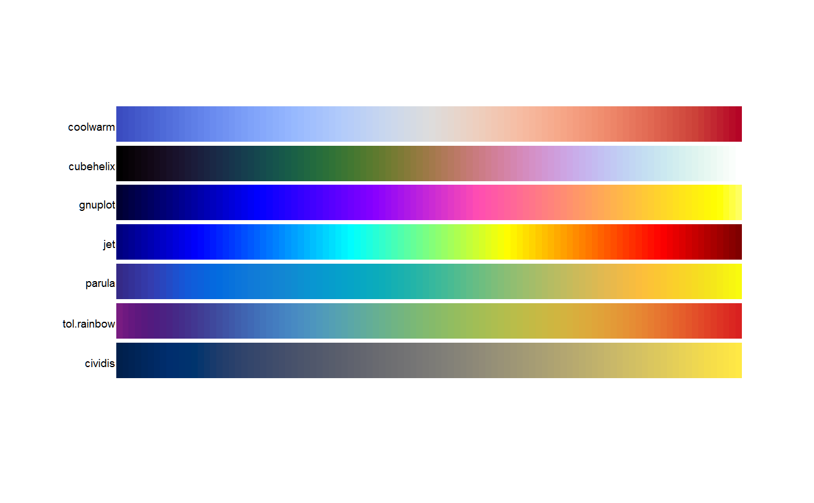
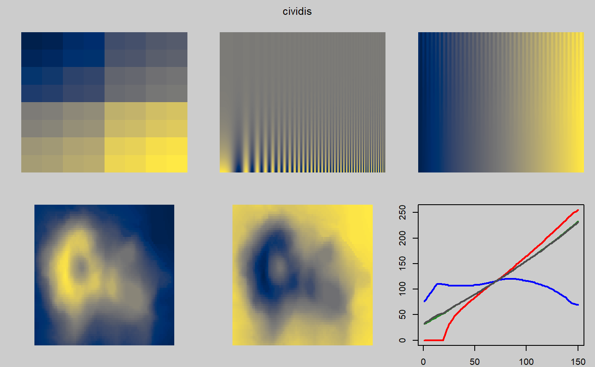

continuous.RdColormaps designed for continuous data.
cubehelix(n = 25, start = 0.5, r = -1.5, hue = 1, gamma = 1) gnuplot(n = 25, trim = 0.1) tol.rainbow(n = 25, manual = TRUE) jet(n = 25) parula(n = 25) coolwarm(n = 25) warmcool(n = 25) cividis(n = 25)
| n | Number of colors to return. |
|---|---|
| start | Start angle (radians) of the helix |
| r | Number of rotations of the helix |
| hue | Saturation of the colors, 0 = grayscale, 1 = fully saturated |
| gamma | gamma < 1 emphasizes low intensity values, gamma > 1 emphasizes high intensity values |
| trim | Proportion of tail colors to trim, default 0.1 |
| manual | If TRUE, return manually-calibrated colors. |
A vector of colors.
The coolwarm and 'warmcool' palette by Moreland (2009) is colorblind safe.
The transition to and from gray is smooth, to reduce Mach banding.
The cubehelix palette is sometimes used in astronomy.
Images using this palette will look monotonically increasing to both the
human eye and when printed in black and white.
This palette is named 'cubehelix' because the r,g,b values produced can be
visualised as a squashed helix around the diagonal from black (0,0,0) to
white (1,1,1) in the r,g,b color cube.
The gnuplot palette uses black-blue-pink-yellow colors.
This palette looks good when printed in black and white.
Identical to the sp::bpy.colors palette.
The jet palette should not be used and is only provided for historical interest.
The code for this palette comes from the example section of colorRampPalette.
The 'jet' palette gained popularity as the default colormap in older versions of Matlab.
Because of the unevenness of the gradient, jet will exaggerate some features
of the data and minimize other features.
The parula palette here is similar to the default Matlab palette.
Specific colors were adapted from the BIDS/colormap package.
The tol.rainbow palette by Tol (2012) is a dark rainbow palette from
purple to red which works much better than standard rainbow palettes
for colorblind people.
If 1 <= n <= 13, manually-chosen equidistant rainbow colors are
used, where distances are defined by the CIEDE2000 color difference.
If 14 <= n <= 21, manually-chosen triplets of colours are used.
If n > 21 or if manual=FALSE, the palette computes the colors
according to Equation 3 of Tol (2012).
The cividis palette by Jamie R. Nuñez, Christopher R. Anderton, Ryan S. Renslow,
is a variation of viridis that is less colorful.
Dave A. Green. (2011). A colour scheme for the display of astronomical intensity images. Bull. Astr. Soc. India, 39, 289-295. http://arxiv.org/abs/1108.5083 http://www.mrao.cam.ac.uk/~dag/CUBEHELIX/
Kenneth Moreland. (2009). Diverging Color Maps for Scientific Visualization. Proceedings of the 5th International Symposium on Visual Computing. http://www.kennethmoreland.com/color-maps/ http://dx.doi.org/10.1007/978-3-642-10520-3_9
Paul Tol (2012). Color Schemes. SRON technical note, SRON/EPS/TN/09-002. https://personal.sron.nl/~pault/
My Favorite Colormap. (gnuplot) https://web.archive.org/web/20040119000943/http://www.ihe.uni-karlsruhe.de/mitarbeiter/vonhagen/palette.en.html
MathWorks documentation. http://www.mathworks.com/help/matlab/ref/colormap.html
BIDS/colormap. https://github.com/BIDS/colormap/blob/master/parula.py
Jamie R. Nuñez, Christopher R. Anderton, Ryan S. Renslow (2017). An optimized colormap for the scientific community. https://arxiv.org/abs/1712.01662
if(FALSE){ # ----- coolwarm ----- pal.test(coolwarm) # Minimal mach banding # Note the mach banding gray line in the following: # pal.volcano(colorRampPalette(c("#3B4CC0", "lightgray", "#B40426"))) # ----- cubehelix ----- # Full range of colors. Pink is overwhelming. Not the best choice. pal.test(cubehelix) # Mostly blues/greens. Dark areas severely too black. # Similar, but more saturated. See: http://inversed.ru/Blog_2.htm pal.volcano(function(n) cubehelix(n, start=.25, r=-.67, hue=1.5)) # Dark colors totally lose structure of the volcano peak. op <- par(mfrow=c(2,2), mar=c(2,2,2,2)) image(volcano, col = cubehelix(51), asp = 1, axes=0, main="cubehelix") image(volcano, col = cubehelix(51, start=.25, r=-.67, hue=1.5), asp = 1, axes=0, main="cubehelix") image(volcano, col = rev(cubehelix(51)), asp = 1, axes=0, main="cubehelix") image(volcano, col = rev(cubehelix(51, start=.25, r=-.67, hue=1.5)), asp = 1, axes=0, main="cubehelix") par(op) # ----- gnuplot ----- pal.test(gnuplot) # ----- jet ----- # pal.volcano(jet) pal.test(jet) # ----- parula ----- # pal.volcano(parula) pal.test(parula) # ----- tol.rainbow ----- # pal.volcano(tol.rainbow) pal.test(tol.rainbow) } # ----- cividis ----- # pal.volcano(cividis) pal.test(cividis)